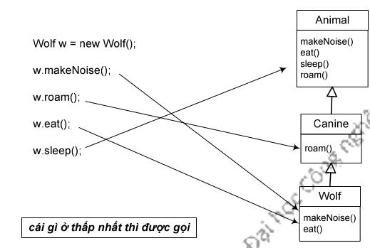

Lớp Wolf có bốn phương thức: sleep() được thừa kế từ Animal, roam() được thừa kế từ Canine (thực ra là phiên bản đè bản của Animal), và hai phương thức mà Wolf cài đè bản của Animal - makeNoise() và eat(). Khi ta tạo một đối tượng Wolf và gán một biến tham chiếu tới nó, ta có thể dùng biến đó để gọi cả bốn phương thức trên. Nhưng phiên bản nào của chúng đó sẽ được gọi?
Khi gọi phương thức từ một tham chiếu đối tượng, ta đang gọi phiên bản đặc thù nhất của phương thức đó đối với lớp của đối tượng cụ thể đó. Nếu hình dung cây thừa kế theo kiểu các lớp cha ở phía trên còn các lớp con ở phía dưới, thì quy tắc ở đây là: phiên bản thấp nhất sẽ được gọi. Trong ví dụ dùng biến w để gọi phương thức cho một đối tượng Wolf ở trên, thứ tự từ thấp lênapter cao lần lượt là Wolf, Canine, Animal. Khi gọi một phương thức cho một đối tượng Wolf, máy ảo Java bắt đầu tìm từ lớp Wolf lên, nếu nó không tìm được một phiên bản của phương thức đó tại Wolf thì nó chuyển lên tìm tại lớp tiếp theo bên trên Wolf ở cây thừa kế, cứ như vậy cho đến khi tìm thấy một phiên bản khớp với lời gọi phương thức. Với ví dụ đang xét, như được minh họa trong hình vẽ, w.makeNoise() sẽ dẫn đến việc kích hoạt phiên bản của Wolf, w.roam() gọi phiên bản của Canine, v.v..